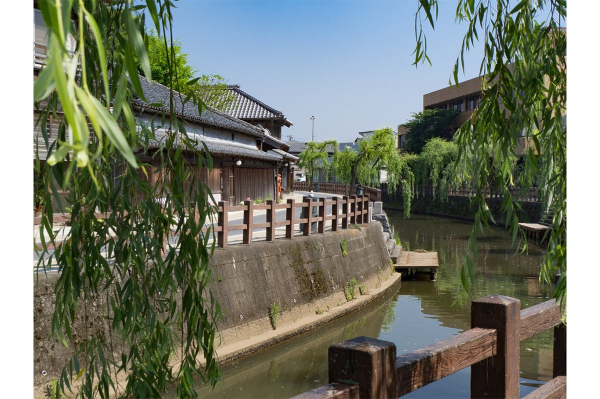
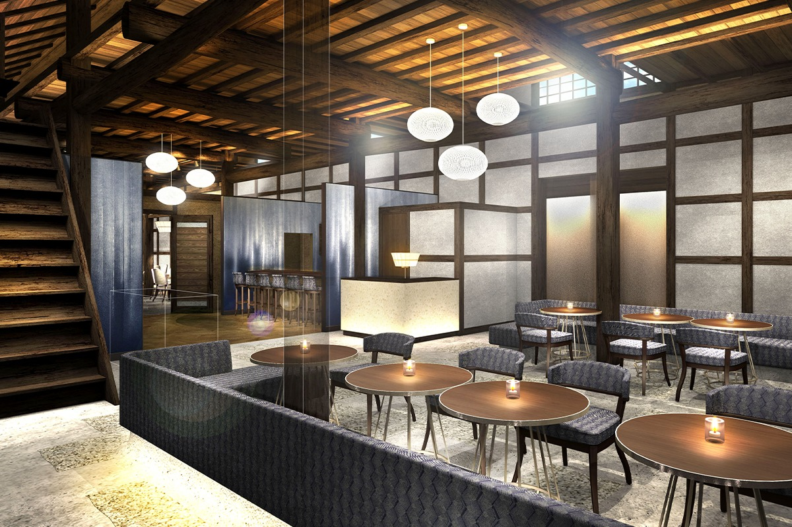
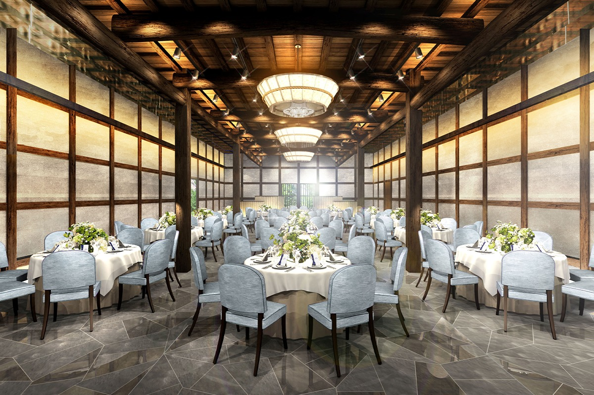
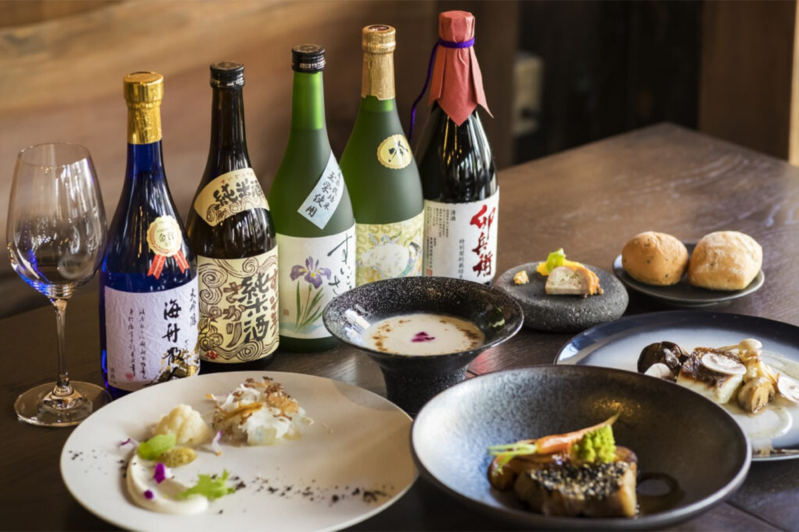
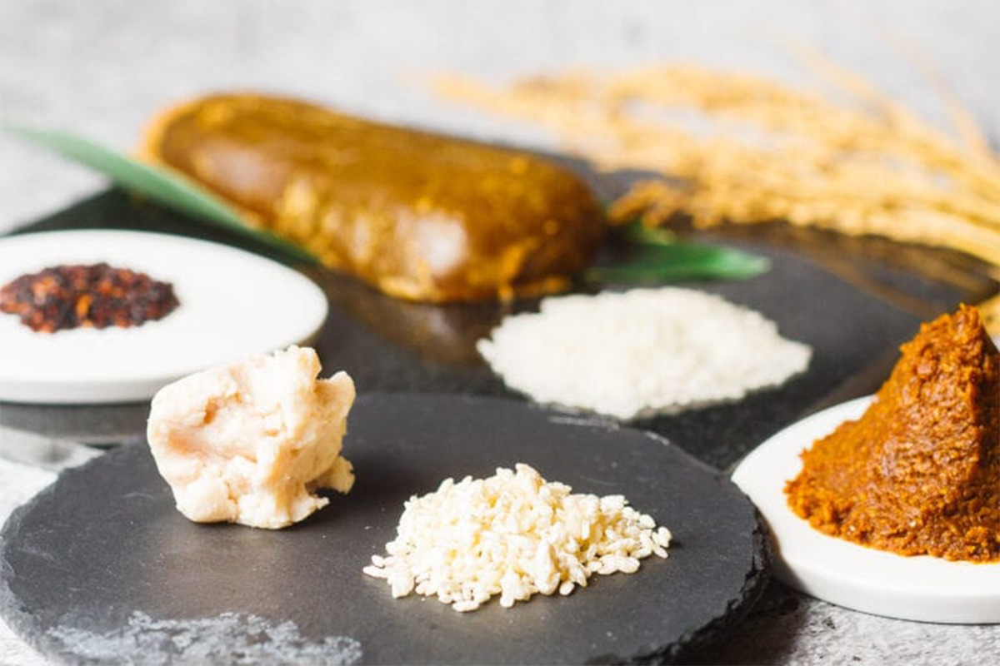

Префектура Тиба · Сахара · где остановиться
Сахара: старый склад сакэварни стал рестораном отеля, разбросанного по купеческому городу

В Сахаре отель занимает не одно здание, а весь старый купеческий квартал: номера разбросаны по домам эпохи Мэйдзи и начала Сёва. В 2021 году к ним добавился ресторан в деревянном складе сакэварни, которой больше 300 лет.
Город
Сахара, речной порт эпохи Эдо
Сахара входит в город Катори на севере префектуры Тиба. В эпоху Эдо (1603–1868) здесь была одна из главных пристаней для перевозок по реке Тонэ, и город богател на речной торговле. Вдоль реки Оно, рукава Тонэ, стоят купеческие дома и лавки, построенные больше ста лет назад. В 1996 году квартал признали охраняемым ансамблем традиционной застройки государственного значения.
В 2011 году Великое восточно-японское землетрясение сильно повредило старые дома. Чтобы сохранить улицы и вернуть сюда путешественников, местные банки и государственная организация поддержки регионов создали туристический фонд, и на его деньги часть домов отремонтировали под отель.
Отель
Весь квартал как одна гостиница
SAWARA MERCHANT TOWN NIPPONIA открылся в марте 2018 года. Это «рассредоточенный» отель: 13 номеров устроены в 11 зданиях, построенных с эпохи Мэйдзи (1868–1912) до начала эпохи Сёва (1926–1989), а улицы между ними служат коридорами. Город сам становится частью гостиницы.
Отель задуман как часть программы города Катори по развитию туризма на основе исторического наследия. Он должен привлекать гостей не только в Сахару, но и во всю округу.
Склад
KAGURA в складе сакэварни «Баба Хонтэн»
1 марта 2021 года при отеле открылось пространство KAGURA: ресторан и зал для банкетов в южном складе сакэварни «Баба Хонтэн». Сакэварня работает больше 300 лет. Начиналась она как мастерская, где делали кодзи, рисовый грибок для брожения, и в 2021 году сакэварня всё так же варила сакэ.

Деревянные постройки склада стоят на просторном участке у старой дороги Катори-кайдо. В этих стенах действительно делали сакэ, и следы работы сакэварни сохранились. Склад сохранили как память о прошлом города и как место, которое снова собирает людей.

Кухня
Французская кухня на продуктах брожения
Земля вокруг Сахары даёт хороший рис, поэтому здесь давно развито всё, что связано с брожением: сакэ и сакэ-касу, рисовый жмых после варки сакэ, а из сои, соли и кодзи делают мисо и соевый соус. С годами местные продукты и умение их сбраживать только совершенствовались.

Ресторан LE UN готовит французскую кухню, но в блюда идут сакэ-касу, соевый соус, мисо и кодзи. Курс строится вокруг сочетания сакэ, которое привозят прямо от сакэварни, и продуктов округи. В зале 84 места, у ресторана есть парковка.

SAWARA MERCHANT TOWN NIPPONIA
- Адрес
- префектура Тиба, Катори, Сахара, и 1708-2
- Телефон
- 0120-210-289 (общая линия VMG, бесплатный номер внутри Японии)